“黄泉巨龙会”是一个概括性的统称，它用来描述任何服务于邪恶的力量或是奇怪的脱离理性的宗教信仰。但是这种组织的成员不会自称为“黄泉巨龙会”信徒。“作为一个真正的信徒，你可能是众先知的祝福之眼、一个在通往内在太阳的道路上的朝圣者又或者在暗影女王议会里的邪术师。如果你是这三个教派之一的成员，你不会把另外两个视为盟友，因为在你看来，他们显然是危险且不切实际的。虽然外人会猜测教派背后的力量——这不需要你是一个柯兰堡的贤者才能悟得出这个手上长着眼睛的家伙可能会跟贝拉希拉——黄泉巨龙会中少数特意为异变魔或者魔君（overlord，旧译：魔君）们服务的分支——有关。
黄泉巨龙会取决于两种因素：结构和力量。其结构决定了邪教的形式和规模，而力量则是其背后的邪恶力量，通常是一个异变魔或邪魔魔君。黄泉巨龙会表格提供了一些崇拜者的例子——只是简单地展示了世界上可能出现的事物的表征，本节的其余部分将对这些元素进行更详细的探讨。
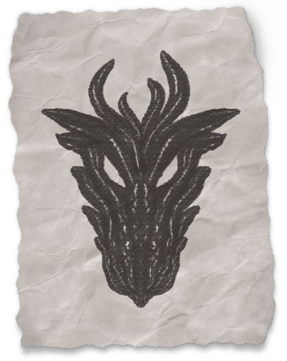
黄泉巨龙会
|
d8 |
教派 |
力量 |
结构 |
|
1 |
警惕之眼The Vigilant Eye。邪教成员在他们的非惯用手的手掌上进化出了异样的眼睛。当他们通过这只眼睛看世界时，成员们可以看到他们周遭世界的“秘密”，这种感觉是真实的——比如看到某些人被邪魔附身，或者即将实施的谋杀。其成员自发地才去行动去清除他们的眼睛“揭示”出的威胁。这种教派通常会在邓奈茨家族飞地或城市守卫的驻所附近扎根。 |
贝拉希拉 |
堕落 |
|
2 |
耳语者Whisperers。这是一个古老的邪教组织。耳语者们之间有一种奇怪的联系，而且一个耳语者家族会在家里的某个地方养一张“嘴”。当一个家族成员到了一定的年龄，他们将被喂给“嘴”：耳语者相信逝者的灵魂永远活在嘴中，可以被耳语者听到。“耳语者”这个名字来自于他们的祈祷传统，一种狂喜的呢喃，模仿着“嘴”发出的混乱的疯言疯语。 |
基尔津 |
传承 |
|
3 |
暗影议会The Court of Shadows。一个由邪术师和法师组成的阴谋集团，他们为魔君苏·卡特什服务，以换取奥术知识和力量。目前议会主要始于终末战争时期的阿卡尼克斯，并且在科瓦雷上发展。成员们会在议会内获得一个专属的封号：一个邪术师可能被称为碎钟伯爵或是忘时女爵。 |
苏·卡特什 |
交易 |
|
4 |
巢群The Hive。巢群的成员认为他们是“爬虫女王”瓦尔拉拉的孩子。大多数信众认为自己是一只爬进类人生物体内并且吞噬了它的大脑的昆虫。巢群的邪教徒们会一起行动并不知疲倦地追求他们女王的目标。 |
瓦尔拉拉 |
堕落 |
|
5 |
地下艳阳The Inner Sun。这个邪教可以在科瓦雷的西海岸的暗影湿地到恶魔荒原一带找到。教徒们相信在凯博尔有一个天堂：下艳阳谷。为了前往，勇士必须打败一群有价值的敌人，将他们的灵魂奉献给监守。教徒们对于“有价值的敌人”的标准各不相同——一些邪教徒会是连环杀手，另一些则只认为怪物或恶人才够格的。 |
卡塔什克 |
传承 |
|
6 |
卓越之躯The Transcendent Flesh。卓越之躯的信徒践行于秽萦迷路之道（walk the paths of the Foul Labyrinth）以寻求超越他们原生肉体的进化。他们和夺心魔以及其他腐蚀者的仆从们一起行事，以换取共生体、心灵异能或其他形式的物理或精神转化为报酬。 |
戴恩 |
交易 |
|
7 |
归来者Revenant。不要把他们跟维纶娜的英魂之刃混淆，信奉归来者邪教的成员认为他们是古代的英雄的转世并且认为自己有着神圣的使命。归来者邪教徒可能是单独行动，也可能是一群信徒认为他们是同一时期的英雄。卡塔什克、拉克·图尔克什和腐蚀者戴恩都会建立归来者邪教团。与归来者邪教打一架的理由很简单：鬼知道他们是不是有着重要使命的重生英雄? |
多种 |
堕落 |
|
8 |
邪虔信者Loyalists。这是最普遍的邪教，虔信徒们把他们不朽的宗主当作神来崇拜者，并致力于将其从凯博尔释放出来。数个世纪以来，这些虔信者们可能一直在缓慢地推进他们宗主的目标，一步步地爬上有影响力的位置，帮助他们主人的非人爪牙。这些堕落的虔信徒们通常狂热地专注于某一项任务，如果他们失败了，教派就会解散。 |
多种 |
多种 |
拉克·图尔克什的野蛮人部落呼喊着要以祂的名义血洗恶魔荒原。同时，祂在五国都有潜移默化地传播仇恨和愚昧的忠实追随者。他还创造了归来者，这些被唤醒的无辜者相信自己是战士们的转世，有着完成未境之战的使命。这是常见的——大多数魔君和异变魔都有多个邪教团，每个都其他的一无所知。虽然每个邪教团都是独特的，但大多数都属于以下三种类型之一。
这些邪教团的成员因意志被恐怖的外界力量所侵蚀而产生的假象所纠集。有时这种妄想会传染给那些参加宗教仪式的人，其他时候这些妄想会首先渗入人们的大脑，然后把他们吸引到邪教中去。这就是为什么黄泉巨龙会永远不会被消灭，为什么他们可以出现在任何地方——你永远不知道什么时候或什么地方会有一个荒诞思想会扎根、蔓延以毒害、扭曲无辜者们的思想与信仰。
虽然一个腐化型邪教的信条和行为在外人看来是非理智的，但在邪教成员看来却是完全合理的。一个归来者会真的相信自己是传奇英雄的转世。一个警惕之眼信徒相信他们被赋予了神圣的视觉并且被揭示为“邪恶”的人必须死。信徒们长出了一只新眼睛，这对他们来说并不奇怪——这是一只被祝福的眼睛！其他人只是嫉妒自己没有。被堕落的信徒看待世界的方式可能与他们周围的人不同。一群归来者可能会和夺心魔或者狰狞异变怪一起工作，但他们认为这些异怪是效忠于他们远古秩序的忠诚骑士。当PL遇到一个腐化型邪教时，PC将面临如何理解这种假象的挑战——理解邪教成员眼里的想要实现的目标，以及这与他们实际正在做的事情之间的关系。这些假象与精神病毫无关系，不能在乔拉斯科家族的医馆中治疗。这是一种超自然的影响，有一个特定的原因——堕落的外界存在——也有一个特定的效果：堕落可能会在任何时候控制任何人，而邪教徒可能看起来完全健康和理智。
腐化型邪教很少会很长时间存在。它们的存在通常会有一个明确的目的，一个特定的计划，以某种方式为它们的指引者服务。在这个计划成功或失败之后，幕后黑手往往会抛弃幸存者。问题是，这是将信徒们从妄想中释放出来，还是单纯地抛弃了他们——甚至是被驱使去从事毁灭性的行为。第二个重要的问题是：是否有可能在教派仍然活跃的时候，将教徒从妄想中解放出来。这可能需要魔法手段才能做到，比如高等复原术。但也可能只需要简单地将邪教徒从他们同党中隔离开来以解除控制，又或者可能是与某个会强化这一妄想的物品分离。如果这种强大的妄想能够被打破，也许这个邪教徒就能找回本心。
腐化型邪教的幕后黑手并不总是显而易见的。邪虔信者们知道自己在为什么力量服务，并常常骄傲地呼喊祂的名字，但许多腐化型邪教并不知道他们背后的力量。警惕之眼信徒可能会错误地认为他们的眼睛是来自奥林的礼物，而归来者可能会觉得是杜·阿拉把它们带回了这个世界。即使信徒们自己没有意识到他们为谁服务，这些东西也可能是一种恩赐。贝拉希拉的邪教团经常与眼睛或眼魔打交道，戴恩则会驱使灵吸怪和变形怪，而基尔津的邪教通常与软泥和黏液有关。但有时一个邪教可能看起来完全无罪。你能断定归来者不是由杜·阿拉复活的吗?
有些邪教崇拜者比任何人类文明都要古老得多。他们扎根于蛮荒的恶魔荒原和暗影湿地——但是移民们把这些信仰带到了五国。这些邪教徒带着在认为他们的信仰的是正常的观点长大。你还记得你的祖母在地下室被那个胡言乱语的家伙吃掉的时候吗？这有什么不对吗？这是她通向不朽之道的时刻：你听到她对你耳语。你希望自己活得够久，能在它的肠子里和她重逢。
传承型邪教的信徒通常会比腐化型邪教的信徒更少出现不稳定和极端份子：毕竟要活到足够长的时间成为一种传统，意味着要避免鲁莽的行为并学会对陌生人隐藏你的信仰。许多传承型邪教似乎是无害的：大多数情况下，耳语者对伤害或者与外人交流没多大兴趣。然而，传承型邪教提供了一个地下关系网，可以在需要的时候被激活。拉克·图尔克什的效忠们潜藏在五国的军队中，随时准备着升级暴力局势。而一个城镇可能遍地都是卓越之躯的信徒，他们看起来完全无害、普通——直到六月当空之夜，他们会装上他们的共生体，并撕碎所有那晚不幸来到这个城镇的外人。
传承型邪教不像腐化型邪教那么极端，但他们仍然用一种诡异的视角来看待这个世界，且清楚地知道他们的力量是谁赐予的。一些传承型邪教认为他们庇护者只是被误解了——戴恩寻求人性的提升，而不是腐化人性！另一些人则赞美他们庇护者的破坏或是混乱的一面，他们要么相信这个腐朽的世界应该被推倒，要么相信信徒们将在下一个时代得到升格。即使一个崇拜者拉克·图尔克什的信徒也不一定是邪恶的：他们可能相信这个在腐朽世界上的邪恶必须被血洗，除了对孤王（the Orphan King）效忠以外，他们很可能是温柔且无私的。
与黄泉巨龙会相关的黑暗力量可以提供很多东西。他们可以像邪术师那样，给他们的仆人灌输神秘的力量。异变魔可以提供共生体和生理性的转化，而砂主可以提供财富、影响力或古代神器给他们忠诚的代理人。因此，交易型邪教通常始于秘密团体。人们自愿加入，并渴望得到邪教所提供的一切。但即便有的人是出于最合理的原因加入，异变魔或霸王的影响是凡人所难以抗拒的：一个人留在邪教里的时间越长，邪教对他的影响就越大。
想想与苏·卡特什(Sul Khatesh)有关的暗影议会(Court of Shadows)吧。一个法师和他的同事正在进行一场有趣的讨论，讨论一种他们以前从未见过的法术。这位同事解释说法术来自阿什塔卡拉收藏，如果这位法师去参加一个集会，他将会发现更多关于魔法和历史的神奇事物。所以他加参加了某个聚会，并被他们遇到的学者和邪术师们所说服。很快，他就加入了邪教，向暗影女王宣誓，并被册封为忘却书馆的骑士。这就像一个游戏，而且他们正在获得一些醉人的新法术。但随着时间的推移，他们变得越来越痴迷于在议会中提升地位。影之国中的政治互动比科瓦雷的世俗政治更真实、更直接。他们为女王执行任务，渴望赢得她的垂怜。他们希望有一天女王会从沉睡中醒来，因为那时，影之国将真正成为现实。
这样的堕落过程在交易式邪教里随处可见。交易型邪教徒可能使用共生体，但在其他方面是相当理性的。或者当你得知他们是如何误入歧途的时候，会了解到他们是可能被完全拉进邪教所信奉的扭曲的现实中的。
交易型邪教通常规模较小，但传播广泛。一个暗影议会的集会可能只有几个成员，但议会本身分散在科瓦雷的各个地区。通常，交易型邪教的成员知道他们在和谁打交道，但是贪婪和好奇压倒了顾虑。然而，人们也可能只知道故事的一部分：一个邪术师可能相信暗影女王是一个强大邪术师，或者可能是一个至高妖精，而没有意识到她实际上是一个魔君。
黄泉巨龙会想要什么？信徒们的奋斗目标是什么？这取决于邪教的结构和宗主。这节里提到过的邪恶力量都有忠诚的信徒，他们致力于将他们的主人从凯博尔中解救出来，或者是想通过为他们的代理人(砂主，夺心魔，或者恶龙)服务以得到他们想要的任何东西。但除非邪虔信者，其他的邪教的目标可能各有不同。
腐化型邪教通常有某种直接的目标在推动邪教的形成和扩张。警惕之眼会追捕只有他们那受祝福的眼睛才能看到的隐藏于社会中的“恶魔”！归来者们致力于重演一场发生在500年前的大屠杀！这些目标通常都是必须阻止的恐怖之事，但它们对邪教的幕后黑手有何意义却并不总是显而易见的：这些计划可能与被封于的异变魔或释放某个魔君无关。如果是由某个魔君指引，大魔们会驱使凡人遵循自己的道路以增长力量。苏·卡特什会让凡人使用魔法作恶以增强她的力量，而不管他们实际上做了什么；同样地，拉克·图尔克什醉心于一切的暴力。与此同时，异变魔们完全无法被理解的。他们非常乐于在他们的代理人身上做实验；戴恩某个邪教可能会进行一种仪式，使龙纹活化并攻击它们的持有者，这除了能满足戴恩的好奇心之外，没有其他目的。异变魔是以非线性的方式体验时间的，这一系列看似毫无意义的混乱或许有着一个无法被预知的未来——这活化龙纹仪式导致的结果会在未来的某个时候在砂主们实施他们的计划时派上用场。总的来说，黄泉巨龙会——尤其是里边的腐化型邪教——很可能并没有什么长期的规划：他们的计划可能而且常常看上去毫无意义。
传承型邪教是一种宗教。它们不是由短期目标驱动的，而是为了指引你如何度过一生。传承型邪教可能会是和平的，无害的——直到他们不是那天为止。一组特殊的星辰排成一列，一个给予教派领袖的幻象，一群外界生物临近的到来——任何邪教都随时可能因为任何原因进行血腥的仪式或残忍的祭祀。这就是传承型邪教的荒谬浮出水面的时刻。Lowholt的人挺友善的——直到肉仓里的脾脏少了，他们想办法摘掉你的器官。真可惜，陌生人，我们的祖先也需要得有一个这样的脾脏——在这种情况下，“祖先”就是在地下室里胡言乱语的那个东西。
交易型邪教通常最初是由成员的欲望驱使的。有些人加入交易型邪教是因为他们想要做些什么——报复他们的敌人，推翻暴政，摧毁当地的犯罪团伙。但是，宗主们总会要求你付出代价，而这最终可能会变成跟上面所说的腐化型邪教一般。
每个黄泉巨龙会分支都与某个被困于凯博尔的邪恶力量有关联，而他们的教旨通常反映了它背后的力量。如果邪教有非人类的同伙，他们会是恶魔、异怪，还是其他怪物？邪教团会使用什么样的宝物和魔法物品？这些魔法物品不一定是来自宗主的直接礼物：基尔津的邪教可能会因为它的高阶祭司是个炼金术师或者它的神殿里有一个会不断涌出神秘液体喷泉而拥有大量的药剂。识别邪虔信团和传承型邪教跟它们的宗主之间的联系可能非常容易，而对于腐化型邪教想确认谁是幕后黑手则相当有难度。不管邪教徒们是否知道他们的宗主的身份，幕后黑手们的力量都会有许多种表征。
通常来说，依附于魔君(拉克·图尔克什、苏·卡特什、卡塔什克、贝尔·沙洛、凯博尔之女) (Rak Tulkhesh, Sul Khatesh, Katashka, Bel Shalor, the Daughter of Khyber)的邪教要么直接帮助砂主，要么试图推动邪魔魔君的行为。异变魔 (贝拉希拉、戴恩、基尔津、奥拉斯克、瓦尔拉拉) (Belashyrra, Dyrrn, Kyrzin, Orlaask, 瓦尔拉拉)的则更神秘。他们的传承型邪教可能会有着代代相传的奇怪行为模式，当位面交汇时，它们就会进行献祭或神秘仪式。但他们也可能做出对谁都没有明显好处的诡异举动。奥拉斯克没有明确的理由把沙恩的居民变成滴水兽；它可以是一种实验，或者仅仅是一种艺术形式。但这些行为将与产生这些行为的异变魔的领域sphere of the 异变魔有关，无论是软泥、石头、眼睛还是昆虫。
下面描述的十种力量反映了最常见的邪教，但也有许多其他的魔君和异变魔。永远不会有一个完整的列表，DMs总是可以开发新的能力。利用这些作为灵感，但不要感到有限。
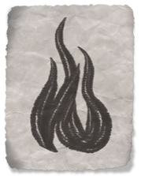
越是光辉的灵魂投下的影子便越长。你无法摆脱内心的邪恶。它总是紧随着你，等着你行差踏错。即使你意志坚定，你真的相信你身边的人和你一样意志强大吗？他们真的那么善良吗？还是说黑暗已经侵入他们的内心？
魔君们是凡人们恐惧的具现，而贝尔·沙洛则体现了我们对他人的恐惧——永远怀疑陌生人会伤害我们，甚至怀疑我们的朋友也不值得被信任。当恐惧驱使善良的人去做可怕的事情时，贝尔·沙洛就会大快朵颐。战争滋养了拉克·图尔克什，而折磨着无数无辜者的宗教裁判的存在则让贝尔·沙洛快乐无比——尤其是由品行高洁的人执行的时候。在贝尔·沙洛于YK三世纪泰拉·麦伦的牺牲而在再次封印之前，他几乎就要摆脱了他的束缚。但一些智者们怀疑贝尔·沙洛是否只是故意败下阵来。现在的他永远地与泰拉绑定在一起，任何能听到银焰之声的人也能听到焰中影那诱惑的低语。
贝尔·沙洛不宣扬野蛮和暴力。他会在放大恐惧和猜忌的同时助长贪婪和自私。他试图让我们相信，我们周围的人是残忍且自私的，活下去的唯一方法就是先下手为强，不顾他人的损失，拿走我们需要的东西。
他的腐化型邪教可能出现在任何地方：贝尔·沙洛抓住了某种猜忌并且助长了它。“低语之焰”是隐藏在银焰教会内的一种交易型邪教——一个祭司和圣殿武士组成的隐秘组织，他们服从贝尔·沙洛的命令，以换取权力和影响力。那些低语之焰的高阶代理人很少有明显的腐败行为，相反，他们会巧妙地鼓励其他人向皈依他们信条或向自己的恐惧屈服。
部从：贝尔·沙洛的代行者是罗刹，他在阿什塔卡拉议会的“代言人”被称为破龙者。他的狗腿子们擅长潜行和欺骗，而不是蛮力。贝尔·沙洛也能控制影子，据说他能赋予任何人的影子以邪恶的生命，使其暗中监视甚至杀死他们。
赐礼：与贝尔·沙洛相关的魔法物品通常能够操纵他人、隐藏思想或控制影子。低语之焰的重要成员常会得到一个心灵护盾戒指，并可能使用魅惑镜片影响他人。这类物品通常是由砂主们制造的，但也可以是古代遗物或注入了焰中影力量的物品。
角色灵感：贝尔·沙洛擅长操纵思想和情绪。低语学院的吟游诗人会将他们的天赋和魔法天赋——驾驭恐惧甚至偷走他人影子的能力——归因于与贝尔·沙洛的联系。对于邪术师来说，至高妖精和旧日支配者契约都可以用在焰中影的设定里。低语之焰的成员有时出自以献身于银焰的圣武士或牧师。即便只是曾经为贝尔·沙洛服务过，他们也能保持与圣焰的联系并保有他们的职业能力：不过，他们通常会变成诡术领域或是破誓者。
故事灵感：任何恐惧都可能被贝尔·沙洛尔放大，并成为邪教的基础。小镇上的一群人可能会相信，在社区中隐藏着一个变形怪或一个鼠人，必须不惜一切代价将其铲除。或者是害怕外国间谍渗透。又或者是战俑将取代人类……你能证明你不是一个战俑取代论者吗？像这样的邪教团会真的相信自己是在保护无辜者不受威胁，而没有意识到他们是服务于黑暗力量。
类似的故事可以和低语之焰联系起来。邪教徒们会欺骗真正善良的教会成员，说服善良的圣堂武士们为了破除假想的威胁而迫害无辜的人。这种好人伤害好人的情况会取悦贝尔·沙洛。冒险者们能在不杀害无辜的情况下揭露邪恶真相吗?
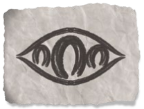
我们通过我们的眼睛了解世界。但视觉是荣耀之眼的恩赐，它可以被给予也可以被夺走。那些为全视者服务的人被赋予了新的眼睛，它能够看到凡人世界的真实。你将成为我的眼睛！
异变魔贝拉希拉与视觉有关。它可能会将其信徒作为自己探索世界的容器。贝拉希拉的信徒可能会对世界所着迷，他们只相信自己能看到的东西。他们可能会观察到他人所看不到的景象，或者获得与视觉相关的能力，比如眼魔的眼波射线Eye Rays。发掘神秘事物的本质对这些邪教来说是至关重要的，这通常也是他们完成使命动力。像警惕之眼邪教一样，忠实的贝拉希拉信徒常常会长出新的眼睛。
贝拉希拉在阴影湿地有传承型邪教：除非受幻象所引导或是需要收集祭品，它的成员一般不与外人交往。贝拉希拉的腐化型邪教可能会出现在任何地方，他们被狂热的幻象所驱使，或者认为只有他们才能看到迫近的威胁（比如警惕之眼成员相信他们可以看到隐藏的恶魔）。贝拉希拉的信徒并不总是危险的：他们可能是被祝福的预言师，有时他们真的能看到隐藏在别人面前的威胁。贝拉希拉也被认为在希恩德瑞克的地下与卓尔们在战斗。
部从：贝拉希拉是艾伯伦世界的眼魔类生物的来源，尽管它们有时候会为其他异变魔打工或者自己玩自己的。任何以眼睛或视觉为力量的异怪都可以和贝拉希拉扯上关系。贝拉希拉创造的任何生物都会有额外的眼睛：这包括它的嶙峋异变怪（dolgaunts）和狰狞异变怪（dolgrions），尽管这些家伙本来就有肉眼。
赐礼：任何与视觉有关的魔法物品都可以与贝拉希拉扯上关系，见得最多的会是共生体。邪教徒们可能会拥有带肉的鹰眼镜片、魅惑镜片、夜视镜或是某种皮质的与穿着者的皮肤同调的百眼法袍。赋予视觉相关能力的共生体通常会看到某些东西；而穿戴者只会有一种:长袍想要看看那栋建筑里面有什么的感觉，拒绝这样的要求可能会导致失去那件物品的能力。直到完成一次短休或者长休。除了物品之外，贝拉希拉还能给予与视觉相关的超自然赠礼，比如给予黑暗视觉或每周一次使用真知术的能力：这类赠礼通常以新眼睛的形式显现在受害者身上，其力量只能通过那只眼睛发挥作用。
角色灵感：贝拉希拉可能会是某个强大邪术师的宗主，因为通常它要求它的邪术师去替他看东西：一个邪术师常常会被指使去观察某些特定的事件。与视觉相关的召唤很常见，魔法效果可以通过眼睛传递——要么是邪术师的天然眼睛，要么是他们展现的新眼睛。任何角色都可以被贝拉希拉所展现的幻象所引导：一个圣武士可能不是追随神祇，而是被邪恶的贝拉西拉所展现的幻象所驱使。是贝拉希拉引导他们去阻止邪恶，还是全视者通过向他们展示恶徒们所做的事情来嘲弄他们，而圣骑士却决意阻止这些幻象的发生？
故事灵感：由于邪教的行为，人们开始看到他们不想知道的真相。一场视觉幻觉使人们把他们的朋友视为怪物或致命的敌人。一个连环杀手正在收集不同种类的眼睛提供给全视者。一个邪虔信团看到的幻象显示其中一个冒险者是他们的下一个指定的祭品。某个团体(比如警惕之眼)或是个人被引导去杀死隐藏的恶魔——其实他们是在杀害无辜的人，还是真的有隐藏在社区中的恶魔?
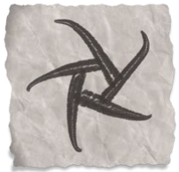
就连艾伯伦也无法打败凯博尔，总有一天她会打破自己的囚笼，粉碎你所认知的世界，揭示那个注定存在的世界。凯博尔之女正在集结了她的军队，很快他们的翅膀就会遮天蔽日。
凯博尔之女象征着龙族的畏惧。她操控着龙族的心灵和思想，将它们堕入黑暗，并最终取得主导。这使得巨龙们在阿贡尼森自我隔离：他们越发挥自己的力量，凯博尔之女就变得越发强壮。
这才是众多邪教里最名副其实的“黄泉巨龙会”。邪虔信徒们效忠于凯博尔，他们是她母亲最伟大的捍卫者，也是凯博尔回归的先驱。邪虔信徒学者认为凯博尔没有背叛西伯瑞斯：相反，她才是被背叛的那个。凯博尔对现实世界有着宏伟而光荣的愿景，但其他创世巨龙则反对她。邪教徒通常认为自己受到法律和制度的压迫：就像凯博尔一样，他们被不理解他们的人囚禁，被那些不理解他们世界观的人囚禁，当凯博尔崛起时，他们将荣耀晋升。一些邪教徒坚持认为龙本身是凯博尔创造的，西伯瑞斯和艾伯伦不过是偷走了祂们：在这种信念下，凯博尔之女不是在腐蚀龙，而是在恢复它们应在的角色。无论如何，信徒们将自己视为一场战役中的战士，以恢复现实的适当平衡，英雄将在黑暗中晋升，而美丽的现实将很快通过龙火和鲜血显现。
腐化型教派信徒可能也有同样的信仰。其他常见的错误认知包括认为邪教信徒是龙——要么被变成了人类形态，要么是龙血的继承者，总有一天他们会恢复正常形态。在极端的情况下，这些信徒可能会展现出龙人的物理特性——生长鳞片或爪，吐息武器，或施法能力。
一些邪教团把凯博尔之女称为提亚马特——在多元宇宙的其他世界那个龙神的名字。然而，凯博尔之女是一个邪恶的魔君，被封印在阿贡尼森的五殇之渊中而不能在其他地方施展力量。
部从：凯博尔之女与龙有关，龙裔、狗头人以及其他具有龙类特征的生物也包括其中。虽然她在砂主里也有的罗刹追随者，但她的主要仆从是亚比莎龙魔。
赐礼：与凯博尔之女有关的魔法物品通常会在某种程度上与龙扯上关系，可能是一件来自阿贡尼森或来自恶魔时代的遗物。魔法武器和盔甲有可能是由龙鳞或龙骨制成。它可以是任何能让持有者控制、保护或模仿龙的神器和奇物。
角色灵感：一个龙脉术士的力量可能会与凯博尔之女有关：这种联系是因你个人，还是你的某个祖先服务于黄泉巨龙？一个龙裔可能天生是某个别的种族，凯博尔之女将他转化成了他现在的形态。信奉邪教的野蛮人可以被描述为：当他们狂暴时具有龙的特性，他们狂暴时候的伤害抗性反映为一层暂时出现的龙鳞。
故事灵感：一个小村庄的居民们听到凯博尔之女的低语，开始有人变成半龙。这种情况能否被制止？受害者能否恢复？一群邪教信徒认为他们自己是龙，并试图宣扬巨龙将统治世界的流言。一个痴迷于巨灵预言的智者是凯博尔之女的秘密仆从……甚至可能是一条堕落的龙。凯博尔之女控制着一条年轻的龙袭击村庄——这是为了什么？一条被束缚在密室里的龙雇佣冒险者们去取回某个龙族的宝珠——他们拿到手后，会交出它吗？
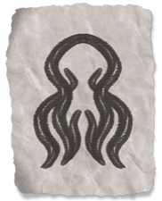
血肉并非终途：它不过是塑造成更完美的事物的原料。我们可以超越我们与生俱来的肉体。你生于日常的囚笼中，但在秽萦迷路之道有着通往你难以想象的奇迹的道路。让我们成为你的领路者吧。
作为最活跃的异变魔之一，腐化者迪恩因其将无辜者的身心扭曲成怪物而臭名昭著。据说迪恩从地精类生物为基体创造了最初的嶙峋异变怪和狰狞异变怪。它从幻身灵中创造出变形怪，甚至从半身人中创造出了锁喉怪。有许多有力的证据表明是迪恩腐蚀化兽者，并创造出最初的兽化人。它还是夺心魔之主，它同时享受着对受害者的思想以及肉体的双重扭曲。
迪恩的邪虔信徒们相信，腐化者者最终会毁灭并改变世界，只有那些为祂服务的人才能在从中存活下来。然而，还有某些别的邪教团——比如卓越之躯——他们以积极的眼光看待迪恩的行为。迪恩改变并创造了新的生命形式——但我们凭什么认定这些东西是怪物呢？这些邪教徒相信迪恩正在推动进化，他们可以通过践行秽萦迷路之道来超越自身的极限。腐化者的影响是阴险的，虽然这一切很可能是从一场简单的交易开始，但信徒们很快就会开始把自然生物视为邪恶和脆弱的。
迪恩的爪牙在安黛尔西部和埃鲁登原野已经存在了很长时间，森林守望者们一直对它的邪恶造物保持警惕。在终末战争时期，摩洛领的矮人发现：迪恩的势力在他们的家园地下的古老国度里盘踞着。虽然大多数家族都下定决心将那些地底的异怪们清理干净，但也有一些家族认为，或许可以利用迪恩的力量来为更大的利益服务，这为卓越之躯和其他邪教团的传播提供了一个立足点。
部从：迪恩创造了所有异变魔所差遣的仆从，比如嶙峋异变怪和狰狞异变怪。祂也是艾伯伦世界夺心魔的创造者——他们知道迪恩是他们的主宰，迪恩是他们集体意识基础。变形怪和夺心魔经常与迪恩的邪教联系在一起，当然任何异怪或怪物的出现都不奇怪。
赐礼：迪恩创造了种类众多的共生体。它们不局限于任何一个主题，任何活体武器或工具都可能与迪恩有关系。祂还与灵能以及心灵的进化密切相关，崇拜者祂的邪教可能会有一些能够聚焦心灵之力的道具。
角色灵感：奇械师可能会听到迪恩的耳语，引导他们创造活体工具；他们的注法可能看起来是活体，尽管他们的效果和其他奇械师一样。与迪恩有关的邪术师可能经历过戏剧性的物理转化或者专注于控制心灵的力量——他们现在为了反叛迪恩而战，还是被进一步地走向进化？对于野蛮人可以把他们的狂暴表现为一个骇人的物理变形。而一个变化系法师则可能会走上织肉者蒙丹的道路。
故事灵感：崇拜者迪恩的教团常常会是将为“畸变”引入故事的一个立足点。教徒可以用尸体制造怪物，克隆重要人物并将其放到世界上，或者把无辜的人变成怪物。卓越之躯教团可能专注于他们自己的身体或心灵的进化，并没有伤害他人的意图——除非他们需要额外的大脑或身体部位。有人可能会发现迪恩可能对变异以及常规龙纹有关：这会对世界产生什么影响？
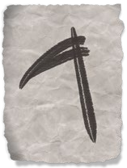
你战胜不了我。你们害怕死亡，知道你们的肉体将腐烂，你们的灵魂将在杜鲁尔中枯萎。但我无情的守门者之主服务——即使你现在杀了我，祂也会为我敞开死亡的大门。
卡塔什克魔君体现了对死亡和不死生物的恐惧。人们通常认为沃尔之血的的追随者想要成为不死族，但其实卡塔什克的信徒们才是拥抱了这种黑暗的命运的人。他的邪虔信徒们梦想有一个亡者统治生者的世界，陶醉于用死亡之力支配民众，相信卡塔什克要么通过转化为不死生物赋予他们永生，要么在他们死去时将他们复活。
卡塔什克崇拜者的兴盛源于对死亡的恐惧以及对不死生物的畏惧。因此，他的邪教团可能会散播瘟疫或会制造大规模死亡的事件，或者他们可能会在下水道里释放食尸鬼或是制造僵尸爆发。他的意图不是死亡本身——无情之王从对生者的恐惧中汲取力量。因此，卡塔什克很少寻求迅速地杀死目标。挥之不去的瘟疫的主要目的是在与之战斗的人群心中播下恐惧的种子，而造成长久恐慌一小群食尸鬼要比一支军队在一天内消灭一座城市更有效。同样，卡塔什克的不死生物勇士们陶醉于他们的非自然状态；他们希望人们知道他们是什么，并害怕他们。
守门者邪教通常是交易型邪教，邪教徒为无情之王服务，以换取死灵法术的秘密或不死生物的服务。祂的堕落型邪教会以某种方式与死亡或不死生物联系在一起，卡塔什克邪教也会有归来者。卡塔什克的崇拜者没有固定的区域，甚至实际上比在其他五国，在坎纳斯他们更为罕见，因为沃尔之血为追随者提供了一条不同的死灵魔法之道。
卡塔什克和监守有一些明显的相似之处，一些学者断言他们是一体的——卡塔什克在恶魔时代的行为带来了与监守有关的神话。祂们关键的区别是卡塔什克只专注于不死，类似于奥库斯在其他世界设定中的角色。而监守的祭司也司职其他的与不死无关的贪婪交易。
部从：卡塔什克的势力是不死生物，即便是在砂主里，他的勇士也都是巫妖、死亡骑士和吸血鬼。他的交易型邪教成员有死灵法师，尽管祂所实际上拥有的死灵法师比在沃尔之血和翡翠利爪团中发现的还要少，毕竟他们的黑暗魔君替他们拉起了那些骷髅，追随们根本就没有必要去学习死灵法术了。
赐礼：卡塔什克有关的宝物多为吞噬生命相关的，如窃命剑。他的信徒也可能拥有能够创造或命令不死生物的工具。除此之外，卡塔什克给他的追随者的最大赠礼是死后的重生。卡塔什克的勇士可以在死后不断复活，这迫使冒险者们需要寻找更复杂的方法来阻止他们复活。他的勇士也可以作为不死生物回归，只有有价值的仆人才能被赋予第二次生命，成为巫妖或是吸血鬼，但是那些不那么重要的信徒可以在死后复活为僵尸或食尸鬼——这对于与他们战斗的冒险者来说是一个令人不快的惊喜！
角色灵感：造成暗蚀伤害的狂热蛮可能会与无情之王有联系，他们必须以守门者的名义杀人才能获得这种能力吗？卡塔什克会是选择不朽宗主的邪术师的另一个合适宗主选择。而死亡领域的牧师和破誓者圣武士不怎么适合卡塔什克，卡塔什克不是神,这些家伙可能更适合监守或者沃尔之血。也许你曾经死过，但是卡塔什克将你带了回来。代价是，如果你不能完成你的任务，你还是会死。你会执行无情之王的命令，还是尝试另一种求生的方法？
故事灵感：任何涉及邪恶不死生物或渴望力量的死灵法师的桥段都可以引入卡塔什克，他的邪教团需要的细节比沃尔之血更少。有一个共同点的是，卡塔什克不只是想杀死无辜的人，他想要人们害怕死亡和不死生物。
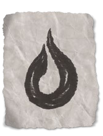
粘液、水、体液是生命最纯净的精华。我们始于一坨液体，最后回归于液体。喝下胆汁之主的赏赐吧。倾听你体内潜藏着的声音，因为它已经成为你的一部分。遵循我们的教诲，在你死后，你会在鬼火中找到永恒的安宁。
异变魔基尔津是活液与秽液之源。祂因作为所以泥怪的源头而臭名昭著；有些人认为，在凯博尔的深处有着流淌着灰泥怪和绿软泥的河流。许多信徒憧憬噬惧体，他们可以在噬惧体无意义的叫喊中听到指引的话语，这些邪教团把基尔津称之为鬼火之王。虽然泥怪在其中扮演着重要的角色，但它的邪教团可以与任何形式的液体相联系。某个教团可能会崇拜者一口古井，而另一些人则说当地的湖泊里寄宿他们祖先的灵魂。任何与液体有关的妄想都可能与基尔津有关。
在阴影湿地中基尔津的传承型邪教有许多强力派系。湿地居民唱把普通的感冒称为“滴血”或“胆汁之主的亲吻”，有这么个传说：基尔津在湿地的河流里撒下了各种巨大的泥怪。尽管许多都知道湿地居民“泥怪亲王”的故事，但它通常被视为一股危险但基本上是中立的力量。菌菇在湿地居民的医药学中扮演着重要的角色。胆汁之主还被视为一种愤怒时可以引发疾病或帮助预防疾病的力量。因此，大多数人更倾向于避免与基尔津接触，而那些鬼火则大多被人们所无视。
部从：在艾伯伦世界，基尔津取代了朱庇莱克斯，作为黑布丁、灰泥怪、拟形怪、噬惧体以及其他类似生物源头，所有这些都可能与黏液亲王有关。它也可以创造类似于活体咒语的生物，尽管基尔津与哀伤之地的活体咒语无关。它最臭名昭著的造物是寄生软泥，一种可以进入生物体内的黑布丁。它们比体型较大的同类更聪明，且可以通过心灵感应与宿主交流。一个冒险者可能会在杀死一个虚弱的邪教徒后碰到一件让他不那么爽的事——致命的寄生软泥出现从尸体中钻出！被寄生黏液束缚的受害者必须找到一种共存的方法，直到他们能从这种生物的寄生中解脱出来(高等复原术可以驱逐它)。如果被激怒了，软泥会把受害者吃掉，这通常是致命的。也有异变怪为基尔津服务，当然由黏液亲王创造的家伙会有着黏糊糊的半透明的皮肤。
赐礼：基尔津邪教通常会有很多药剂。虽然他们可能和常规版本没啥不同，但基尔津的药水常常会有一些蠕动或者什么东西在渗出的特效。基尔津的共生体经常模仿魔法衣物的效果，尽管它们是流动的，而不是织物，基尔津版本的精灵斗篷会是一种无定形的裹布，它会随着周围环境的变化而变化。
角色灵感：来自古老的耳语者家族的奇械师可能有非传统的炼金术方法，他的人工生命体可能是一团活体软泥。旧日支配者邪术师可以专攻液体有关或惑人心神的耳语有关的法术；即使是给他的邪能爆加点诡异的粘液球风格也不是不可以。
故事灵感：基尔津的邪教团可能会对城镇的供水系统搞事，无论是下毒或是致幻剂，又或是把水变成活体泥怪。基尔津的寄生淤泥可能遍布整个城镇，或者接管某个特定的组织——但它们真正想要的是什么呢？派对上的朋友可能会被一只呓语大嘴吃掉——他们还能活在黏液里吗?
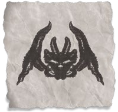
石头是不朽的。它倾听，它铭记，它选择沉寂。但任何见过石像鬼的人都知道它可以随时移动。所以，向石头报以敬意吧，在你化为尘土之后，它还会在一直在这儿。
异变魔奥拉斯克是石之主。奥拉斯克的传承型邪教徒说，是创造出洞穴的静止之主——石中之音——会指引矿工找到矿石。奥拉斯克可以给石头注入生命，就像石像鬼那样，但它也能把生物变成石头，人们认为大多数拥有这种能力的生物——美杜莎、石化牛、石化蜥蜴、石化鸡蛇——都是它的杰作。邪教团可能与这些生物有关，但他们也可能是在崇拜者石头本身。奥拉斯克的信徒们可能会崇拜者一种碰到血会发出低声细语的神石，或者会有一间位于地底的密室，在那里，他们会把所有邪教的秘密知识刻在密室的墙上。
奥尔斯克是不太为人所知的异变魔之一。崇拜者祂的邪教团可以在高山和深洞中居住的人群中找到。奥尔斯克的堕落型邪教经常在那些与石头打交道的人周围形成：泥瓦匠、雕塑匠、石巨人，甚至是住在石塔里的人。当墙壁开始对你低语时，就意味着奥拉斯克找上你了。
奥拉斯克被认为与其他异变魔派系积怨颇深。奥拉斯克和基尔津从根本上是对立的：固体对液体，静态对变化。一些学者认为，奥尔斯克创造的美杜莎和石化蜥蜴是对为了恶心贝拉希拉，因为看到这些生物就会触发它们致命的力量。
部从：奥拉斯克的部从常与石头有关，包括由石头构成的和有石化能力的。卓姆的卡扎克·德拉尔的美杜莎否认他们与奥拉斯克有任何联系，但在凯博尔的其他地方可能会有祂的美杜莎信徒。奥尔斯克有着许多形态各异的石像鬼仆从。它能创造出被扭曲的土元素。奥拉斯克的异变怪常拥有岩石般的皮肤，可以无限期地站立不动。
赐礼：任何与石头有关的魔法物品都可以与奥拉斯克扯上关系。邪教徒们经常使用异能塑像，而且与之相关的野兽形态通常会是变异后的。奥拉斯克是艾伯伦世界最常见的艾恩石的来源，它的艾恩石会向同调它的角色耳语那些令人不安的秘密。奥拉斯克的邪教也可以使用魔法石而不是金属制造的盔甲或武器。
角色灵感：图腾野蛮人可以将熊图腾能力描述为静止之主的祝福，在他们狂暴的时候，他们的皮肤会呈现出石头样的纹理。一个战铁奇械师可以用石头而不是金属来雕刻他们的钢铁卫士，然后让它动起来。
故事灵感：城市里所有的雕像都开始讲话，低语着危险的秘密。出现了一系列诡异的谋杀案，凶手会是活过来的雕像吗？一个堕落型邪教正在召集人们接受石化。他们的教宗说，一场可怕的大灾难即将发生，只有那些被石化的人才能存活下来，一旦灾难过去，主将释放他们，此事当真？邪教的仪式正在慢慢地将一个社区中的每个人变成石头。邪教又在雕刻雕像，然后把它们活化。他们是在用这些复制品替换重要人物，还是在研究可以摧毁这座城市的怪物?邪教的仪式吸引了怪兽来到这座城市，但它们的目的何在?
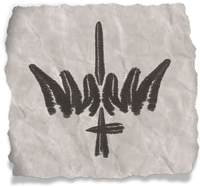
只有在冲突中，我们才能找到本心。只有当我们和别人较量过后，我们才能知道自己的斤两。法律是弱者为控制强者而设的陷阱，任何你能靠拳头或刀片拿走的东西都是你所应得的。
无论是对于暴力的受害者，还是在嗜血和愤怒中迷失自己的人，魔君拉克·图尔克什都体现了他们对战争和流血的恐惧。拉克·图尔克什的信徒包含了那些拥抱无休止的暴力生活的掠夺者，但也包括那些散播仇恨和挑起冲突的人——任何可能在原本和平的地方挑起血腥冲突的人。
虽然孤王的邪教团大多是被残忍的侵略所驱动的，但他们也可能认为自己是在为更伟大的目的服务。一个堕落型邪教可能真的下定决心要打倒掠夺无辜者的强盗，他们只是被一种错觉所驱使：即除了流血之外别无他法。另一种常见的错觉是，必须通过血腥的战争来清洗当前的世界，为创造一个和平的世界扫清道路——这些教徒今天战斗只是为了让他们的孩子能见到明天的和平。
战争之怒在恶魔荒原的魔裔部落中拥有许多强大的追随者，但他也从终末战争中汲取力量，他的教团在五国的任何地方都能找到，尤其是在战争中遭受过严重损失的地区。正如卡塔什克不同于监守一样，拉克·图尔克什也不同于战争三面。拉克·图尔克什并不是一个指引每个士兵双手的战神，相反，不管谁输谁赢，他鼓动人们发动攻击以让自己沉浸在流血和冲突之中。
部从：战争之怒在砂主中有邪魔仆从，像是罗刹、魇骑魔Narzugon、军团魔/莫瑞魔Merregon和其他恶魔或者魔鬼。但拉克·图尔克什势力基本上都是亡命之徒。除了恶魔荒原上的魔裔部落之外，许多卓姆的牛头人也崇拜者化名为尖角亲王的拉克·图尔克什。泽尼尔之契的豺狼人已经断绝了与邪魔们的联系，但是仍然有许多豺狼人——尤其是在恶魔荒原上的——仍然与战争之怒保持联系。
赐礼：拉克·图尔克什用魔法武器武装他的勇士。其中最强大的可能是在阿什塔卡拉或恶魔时代的遗迹中锻造的，但在较低的层次上，拉克·图尔克什的邪教团在寻找当地最棒的军火提供者上有着一种不可思议的天赋。
角色灵感：野蛮人是拉克·图尔克什的标志性的忠卫，而作为一个信徒，你可以是一个骄傲的牛头人，将你的杀戮奉献给尖角亲王，一个来自恶魔荒原的人类或者提夫林。对拉克·图尔克什来说，当咒剑邪术师的宗主也未尝不可，你的武器可能是恶魔时代的影剑莫达克什所制造的神器。你是陶醉于自己的力量，还是说你的剑是一种诅咒？也许它会每一个星期都夺走一条生命，如果你不杀罪有应得的人，这把剑也会去杀死一个无辜的人。
故事灵感：就像贝尔·沙洛一样，与拉克·图尔克什有关的阴谋可能会集中在终末战争后不断升级的紧张局势上，两者主要的区别在于：贝尔·沙洛的信徒可能会推动更吹毛求疵的宗教审判，而拉克·图尔克什则会引发暴动。当地人可能会把愤怒发泄在塞尔难民或战俑身上，认为他们会威胁到自己的生计。归来者可以声称自己是英雄的灵魂，回归是为了纠正过去的错误。一个有魅力非凡的领袖可能会激励一个社群起来反抗土匪或地方暴君的压迫。这是一项崇高的事业，但会有多少人将死于随后的暴动起义呢？
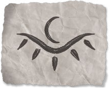
我知晓能够塑造世界的秘密。用三个字咒语，我可以把你烤了；用四个字的咒语、我还能再把你冻死。但是既然我能让你服从我的意志，我为什么要这样做呢？暗影女王知晓你的秘密——照我的命令去做，否则你的秘密将被公诸于世。
苏·卡特什体现人们对魔法和秘密的恐惧……那么除了秘密知识外，还有什么是魔法呢？她向阿卡尼克斯的学生们耳语着自己的见解，并激励着那些从事战争武器研究的人们。但她也鼓励人们保守秘密，而当她向那些想要利用这些秘密的人透露这些秘密时，却让人痛苦不堪。
苏·卡特什的邪教通常从交易型邪教开始。法师或是邪术师会用仪式来召唤她，用鲜血或效忠来换取力量和知识。苏·卡特什不需要凡人的灵魂，但一个信徒可能会相信他们已经向她献出了他们的灵魂。真正会取悦她的是将魔法实用于残酷的目的，或者以使人们害怕它的方式使用。尽管信众们可能会出于正当的原由与她建立联系，但利用她的能力的人越多，腐败就越可能悄悄潜入。暗影议会的成员相信他们是影之国的一份子，这个国度一天比一天真实，一些成员甚至认为他们可以看到它的尖塔重叠在现实世界的建筑上。有些邪教团或许会沉迷于自己的力量，信奉会施魔法的人比不会施魔法的人更优越的观念——他们有权捕食这些世俗的牲畜。鉴于她对秘密的热爱，苏·卡特什的崇拜者几乎总是隐忍且私密的。虽然魔法通常在对她的崇拜者的邪教中有很重的分量，但她的信徒还有可能只是一个搞敲诈勒索或是卖弄秘密的人。
部从：苏·卡特什的超自然代理人主要是罗刹，这些罗刹通常比他们的同伴拥有强大的魔法力量。她的“代言人”赫克图拉（Hektula）是阿什塔卡拉的图书管理员，也许是现存最博学的贤者。除此之外，她主要的代理人是那些被她引诱来为她服务并被赋予神秘力量的凡人。
赐礼：那些为守秘者服务的人通常都会带着卷轴或者魔法书，而邪教徒可以得到阿什塔卡拉制作的魔杖或是法杖。由于苏·卡特什的主要能力是知识，她可能会引导她的追随者找到达坎帝国或其他文明的宝藏。苏·卡特什很喜欢给邪术师们谈条件，她还可以根据自己喜好赠予一些比较低级的施法能力。
角色灵感：苏·卡特什可以成为一个强大邪术师的宗主。她的能力是多方面的，根据你向她寻求的能力，她可以授予与至高妖精、恶魔或咒剑宗主相关的职业特性。对于这样一个邪术师来说，最主要的问题是你是否还在为她服务——你是否在从事冒险事业的同时也在寻求在暗影议会中晋升？或者你是否后悔当初做的交易并试图寻找救赎？任何一个施法者都可以从苏·卡特什那里得到一份恩惠，即使他们没有如邪术师那样的紧密联系，例如：她在你梦里教会了你第一个咒语了吗？你害怕她会回来索取回报吗？同样地，一个想要获得“魔法天赋”专长的角色可以将其作为苏·卡特什的礼物，但这会导致什么问题吗？
故事灵感：苏·卡特什的邪教是一个引入某个靠施法能力作威作福的邪恶巫师组织的简单方法。暗影议会可以充当这个角色，但它也能够以用一种更巧妙的方式使用，也许议会的贵族会帮助冒险家，于是他们就被卷入了这个虚构国度的政治和阴谋之中。苏·卡特什的邪教可能成为正在撕裂一座城市的黑市。PC或NPC可能会突然发现他们知道他们遇到的每个人的最丑恶的秘密……但他们确定所有这些秘密都是真的吗？还是苏·卡特什向他们灌输了足够的真理，让他们即使明知这将他们引向邪道也毫无疑问地相信这些洞见?
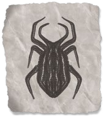
个性是一种诅咒。每一天，它都让你充满失望和怀疑。但在蜂巢里，你永远知道自己的位置，永远知道自己的目的。加入我们的行列。忘记你的过去。忘记你的痛苦。帮助我们建设一个更美好的世界。
异变魔瓦尔拉拉与昆虫和各种爬行害虫一起工作。它的孩子就在我们周围，在墙里听着，吞噬着我们的死人。在创造新的、致命的昆虫和蛛形纲动物的同时，瓦尔拉拉还进行了昆虫意识的实验，将一个类人的思想传播到多个身体上。瓦尔拉拉错觉的受害者可能会认为他们是变成人形的昆虫，或者他们被寄生虫控制或吃掉。它最广为流传的崇拜者称自己为巢群The Hive；这个教派的成员放弃了他们的个性而为集体服务，哺乳动物就像昆虫一样。当处理巢群The Hive的时候，问题是这仅仅是一种幻觉，受害者能否被拯救，或者信徒们是否真的被瓦尔拉拉的孩子们从内部吞噬了，只是穿着人类的外壳。
在巢群The Hive之外，瓦尔拉拉的崇拜者者总是以某种方式与昆虫互动。一些人相信他们正在接受隐藏在昆虫嗡嗡声中的神圣信息。另一些人培育了大量的心灵感应昆虫巢群The Hive，或者创造了埋葬坑作为蛆虫的滋生地。
瓦尔拉拉并没有固定的领地，但是它的信徒经常在大城市的下水道和中部涌现出来。它在昆虫和人类都繁荣的地方繁荣。尽管凛冬之子德鲁伊都喜欢害虫，但他们鄙视瓦尔拉拉和它的崇拜者；他们试图维护自然秩序，而瓦尔拉拉的作品却绝非自然之物。
部从：瓦尔拉拉创造了魔虫，任何一种非自然的昆虫或爬虫都可能归因于爬虫女王。瓦尔拉拉和异变怪没多少关系。它的主要爪牙是螳螂人，祂不断地扭曲和发展他们，你可能每次遇到他们时都会发现他们之间略有不同。虫群、蜘蛛、蝎子和其他类似的生物可以在与瓦尔拉拉邪教的遭遇中遇到。然而，和所有的异变魔一样，瓦尔拉拉是把自然的东西变成了不自然的。当使用一个相对平凡的昆虫作为基础生物时，考虑一下你可以添加什么使它变得不自然。这可能是一种魔法能力，但也可能是异常的智力或美丽的特征——也许巢群里的昆虫在发光，而它们发光的甲壳上波动的图案会带来某种类似于催眠的效果；又或是当这些生物飞行时，它们翅膀的嗡嗡声听起来像人类疯狂的笑声。
赐礼：瓦尔拉拉提供甲壳质护甲和活体武器。祂创造的共生体会在寄主体内挖洞，祂给予的两件代表性赐礼是投掷圣甲虫（throwing scarab）和魔咒脑洞（spellburrow），这些会在第七章中提到。
角色灵感：孢子结社的德鲁伊（《拉尼卡公会指南》）可以拿来魔改一下，像是把他们的孢子光环呈现为虫群光环。某个角色可能会认为自己是瓦尔拉拉的孩子——一只被改造成人形的昆虫，可能是作为实验，也可能是被派去收集信息的斥候。
故事灵感：非自然的虫害正在侵蚀土地，是什么这些虫子吸引到这里来的？蜂群的一个分支正在城市的一个下水道蔓延，但是他们是在捕食无辜者呢，还是说在引诱新成员自愿加入？一只昆虫跟随冒险家，耳语着他们的秘密，它只是一个变形生物，还是来自蜂巢的一个傀儡？
黄泉巨龙会的成员并不总是邪恶的，邪教团也不总是追求邪恶的结局。前一节介绍了与特定邪教相关的PC的一些可能的想法。但是作为一个从战争之怒处攫取力量的野蛮人，这力量意味着什么呢？最后的一个问题是：你希望它意味着什么？你想扮演一个故意为邪恶势力服务的角色吗？你想强调这样一种观点吗：当别人把你代表的力量视为邪恶时，你却以一种积极的态度与之互动？或者你只是在探讨这种想法？例如：你或许是在奋斗，以打破你与邪教团的联系，又或者你是一个叛徒，与你曾经服务过的力量战斗？邪教徒起源列表里提供了一些例子，你可以看看试着找到灵感。
邪教徒起源
|
D6 |
起源 |
|
1 |
你在一个传承型邪教中长大，比如低语者或内在炎阳。你知道外人不理解你的信仰，但你看不出其中有什么邪恶，并努力遵循你的家族传统。 |
|
2 |
你是一个归来者。你相信你自己是某个古代英雄的转世，他的命运将在现代实现。这可能是一种错觉，如果是这样，你必须发现是哪股邪恶力量在利用你作为棋子。另一方面，也许这只是表象，当世界需要你时，奥林和监守确实保住了你的灵魂并复活了你。 |
|
3 |
你和一个交易型的邪教所有关，比如暗影议会。你相信你所拥有的力量所能做的好事胜过其邪恶的本性。这种情况会一直持续下去吗?或者你知道了你宗主的秘密，你是宁愿自己不知道吗? |
|
4 |
作为一个邪教勇士，你获得了某些或所有的职业特性，但现在你试图找到一种方法来与之割席。如果你成功了，你会失去这些能力吗(也许可以通过改变你的职业或子职来反映这一点)?你被你的前同党追杀了吗? |
|
5 |
你从某个魔君那里窃取到了你的力量，你认为当你使用它们的时候，你实际上是在削弱魔君的力量。他们意识到你的行为了吗？邪教徒们会想杀了你吗？ |
|
6 |
你是一个传承型邪教的成员，你相信你所服务的力量会让世界变得更美好。如果你与拉克·图尔克什有关，你可能会相信冲突是生命的本能；如果你和苏·卡特什有关，你会觉得一个由魔法统治的世界会更美好。或者你相信凯博尔的崛起是不可避免的，但你的魔君至少会保存文明世界。这些信念不会阻止你成为一个英雄，它们只会影响你做事的方式。 |